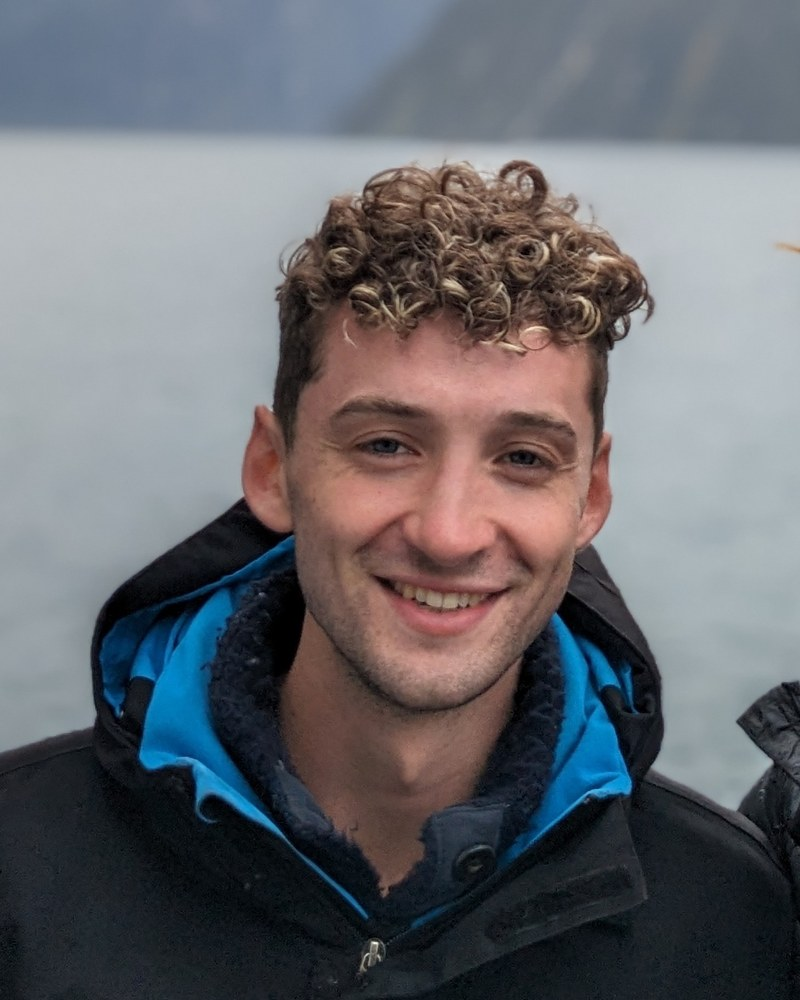

Junior Research Fellow at Magdalene College, Cambridge ancient DNA, evolutionary genetics, and the history of human disease

I study how thousands of years of human migration, lifestyle change and infectious disease have shaped the genetic architecture of the diseases we live with today. My work sits at the meeting point of ancient DNA, statistical genetics and evolutionary medicine.
I am a Neville Junior Research Fellow at Magdalene College and work in Richard Durbin's group in the Department of Genetics at Cambridge. I read Natural Sciences at Clare College, Cambridge, and completed my PhD at Pembroke College in 2023 under Eske Willerslev, with co-supervision from Rasmus Nielsen (UC Berkeley) and Daniel Lawson (Bristol). Before returning to Cambridge I held postdoctoral positions in the Cambridge Department of Genetics and at the GLOBE Institute in Copenhagen.
I was first or joint-first author on three of the four papers that appeared on the cover of Nature in January 2024, including the lead study tracing the elevated risk of multiple sclerosis in northern Europe to positive selection in Bronze Age steppe pastoralists. The papers were covered widely in the international press: BBC television and radio, ITV News, the Guardian, the New York Times, the Washington Post, the Financial Times, the Economist, and several hundred further outlets.
Two questions sit at the centre of my research. Why do modern populations carry such high frequencies of disease-associated genetic variants? And why are those variants so poorly suited to the environments we now inhabit? Answering them well demands looking far beyond present-day data — to the lifestyles, pathogens and migrations of our ancestors over the last ten thousand years.
Detecting and dating signatures of natural selection across tens of thousands of imputed ancient genomes from Eurasia.
Reconstructing how the genetic architecture of complex traits has shifted across prehistory, and how local ancestry can sharpen modern polygenic prediction.
Why are diseases such as MS, rheumatoid arthritis and type 1 diabetes so common in northern Europe? An evolutionary account rooted in pathogen-driven selection.
The evolution of the human immune system as a long conversation with the pathogens our ancestors lived alongside.
Selection on diet-linked variants from the Neolithic onwards, and the metabolic legacies it has left in modern populations.
Combining ancient-DNA reference panels, large-scale GWAS and biobank data to extract evolutionary signal from polygenic disease.
My current work is moving in two directions. The first broadens the same evolutionary lens beyond autoimmunity to cardio-metabolic disease, biomarkers and other complex traits, and develops new methods for tracing fine-scale ancestry through deep time. The second is more translational: testing long-standing hypotheses about why modern environments misfire on ancient immune systems, with implications for public health and personalised medicine.
See also Google Scholar and ORCID.
§ denotes joint first authorship.
The 2024 Nature papers were covered in over 700 pieces of international media. A representative selection below.
Coverage spanned more than 700 pieces in 30+ countries, with a combined potential reach approaching one billion. Cambridge press office report and full coverage list available on request.
For research enquiries, collaborations, or media requests please write to the address below. I aim to reply within a week, though during teaching term this can run longer.